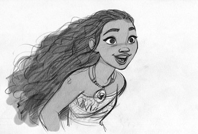
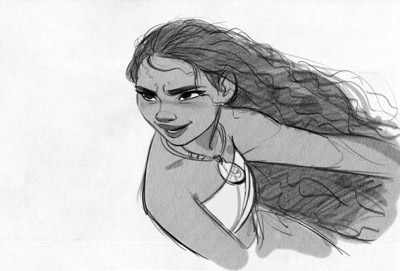

El productor de 'Moana' Osnat Shurer detalla el meticuloso proceso de llevar a la gran pantalla la aventura polinesia nominada al Oscar de Walt Disney Animation Studios.
La aventura de animación CG de Walt Disney Animation Studios, Moana, lleva a los espectadores a aguas desconocidas con su enfoque en la música, la cultura y el folclore polinesio. Estrenada en noviembre, la película fue dirigida por Ron Clements y John Musker y co-dirigida por Don Hall y Chris Williams.
Moana ha ganado más de 533 millones de dólares en recaudación mundial hasta la fecha, y ha sido nominada a dos Oscars, la mejor película de animación y la mejor canción original, además de dos Globos de Oro, dos premios BAFTA y seis premios Annie.
Inspirada por historias del folklore polinesio, la película cuenta la historia de Moana Waialiki, la única hija de un jefe polinesio en la pequeña isla de Motunui. Cuando los pescadores de su isla no pueden capturar ningún pez y las cosechas fracasan, ella aprende que el semidiós Maui causó la plaga robando el corazón de la diosa Te Whiti. La única manera de curar la isla es persuadir a Maui para que devuelva el corazón de Te Whiti, así que Moana emprende un viaje épico por el Pacífico para salvar a su gente.
El productor Osnat Shurer, ex jefe de la división de cortometrajes animados de Pixar, explicó que llevar la película a la pantalla ha sido un proceso largo e iterativo: "Esta película ha tenido muchas formas diferentes, pero subyacente a todo esto, en el nucleo se encuentra la historia principal de la que Ron y John pensaron hace años ", dice.
Los directores Clements y Musker han colaborado en éxitos animados como The Little Mermaid (1989), Aladdin (1992) y The Princess and the Frog (2009). "Después de 35 años trabajando juntos, Ron y John pueden terminar las frases del otro", dice Shurer. "No siempre están de acuerdo y no les importa si hay una habitación llena de gente si necesitan ordenar las cosas para encontrar la mejor solución.
Ellos discutirán algo hasta que lleguen a un consenso, o uno se siente más fuerte y el otro está feliz de ir con él. Creo que nos ayuda a hacer agujeros en las decisiones, y en la animación, hay 5.000 decisiones al día. Se trata de decisiones.
Shurer se unió a los directores y un grupo de artistas de Disney en un viaje a Fiji, Samoa y Tahití hace más de cinco años para investigar la cultura y el folclore. Su misión era experimentar las islas no como turistas, sino como observadores, investigadores y estudiantes.
"Hemos salido de estos viajes no sólo con ideas, imágenes e inspiraciones para nuestra historia, sino con una resolución aún más fuerte que queríamos hacer algo que la gente que conocimos abrazaría", dijo Musker. "No estamos haciendo un documental, por supuesto; Es una característica animada y una obra de ficción. Pero nuestras experiencias infundieron nuestra imaginación de una manera que no habíamos anticipado "
Según Clements, el viaje "fue la base de la película en términos de la conexión de la gente con la navegación, la conexión a sus ancestros y el respeto por la naturaleza. Muchas de esas ideas vinieron de ese primer viaje de investigación y la película estaba muy inspirada en eso ".
En el camino el equipo reunió un grupo ad hoc de asesores que los cineastas llamaron el Oceanic Story Trust (OST). El grupo incluyó antropólogos, educadores, lingüistas, expertos en tatuajes, coreógrafos, especialistas en haka, navegantes y asesores culturales que colaboraron con el equipo creativo de Disney.
"The Trust ha influido profundamente en el aspecto y la sensación de esta película. La película no sería lo que es hoy sin su guía ... Y se han mantenido involucrados con la película durante todo su proceso de producción para intentar capturar todo lo que pudimos de todas las cosas maravillosas que aprendimos, y las personas maravillosas que nosotros Se reunió ", dice Shurer.
Para los directores, este fue su primer largometraje de CG, y Clements comentó que la tecnología está evolucionando rápidamente, pero el proceso es en realidad ahora incluso más lento. "Una de las diferencias en el proceso en comparación con una película dibujada a mano, es que las cosas se desarrollan mucho más lentamente. Todo tiene que ser construido, junto con la historia, que pasa por una gran cantidad de cambios. Los personajes tienen que ser diseñados; Tienen que ser modelados; Tienen que ser manipulados. Cada elemento del entorno tiene que ser construido. Hay tantas pruebas y tanta investigación en curso que no se ve mucho en un principio. Tienes que ser paciente. Tienes que esperar mucho tiempo ", dice.
"Y al final, hay un horario muy comprimido", continúa Clements. "Parte de esta película se hizo antes de enero pasado, pero la mayor parte de esta película se hizo en realidad en el último año y en un ritmo bastante rápido Así que, cuando vimos que realmente empiezan a reunirse, nos quedamos un poco impresionados por Un montón de cosas que estábamos viendo, pero tomó mucho tiempo, pero es muy divertido ver que todo está bien ".